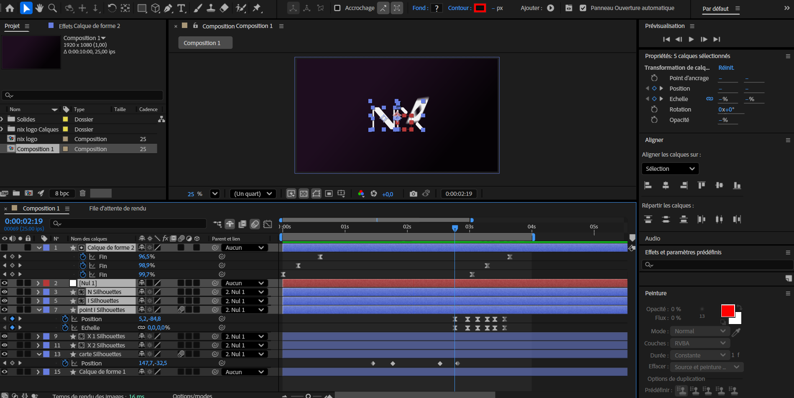

Strategic Benchmark
Analyzing high-end gaming platforms revealed a strong trend toward sober, immersive interfaces. With NIX, my goal was to synthesize these premium visual codes into an even more streamlined experience.
Focusing on sophisticated "Dark Mode" layouts and high-contrast typography to ensure a premium feel.
Simplifying the Information Architecture to remove any distractions and focus purely on the gameplay experience.
Visual Identity & Moodboard
I aimed to convey a premium, lucky, elegant, and intimate atmosphere for the online casino. The idea was to give the platform a refined and sophisticated feel while still keeping it accessible and welcoming to players. The moodboard helped guide this direction, especially in selecting colors that balance elegance with approachability.


Logo variations
The logo was designed to reflect the premium and elegant identity of the online casino. It uses a typeface with strong contrasts between thick and thin strokes to emphasize this refined feel. A playing card element was integrated into the design to reference the casino universe. The logo construction ensures clarity and balance, and it is presented in several color variations from the palette for consistency. A simplified symbol version (monogram) was also created for smaller formats such as social media avatars or icons.

Motion Design
To add life to the graphic identity, I created an animated version of the logo using After Effects.

Work in progress — After Effects
Wireframe & final UI
Developing the product myself allowed me to iterate in real-time. The architecture was designed to be modular.